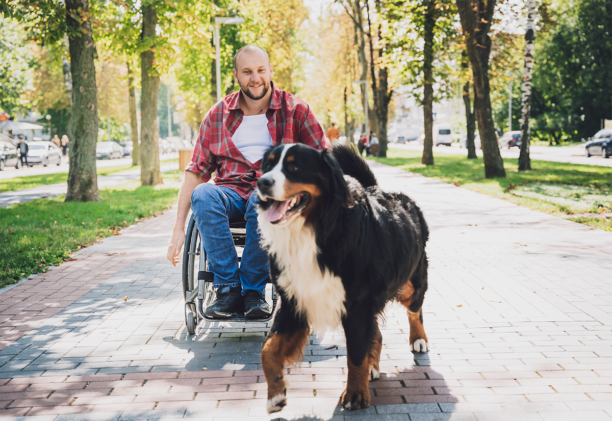

Helping Pets Find Their Next Chapter
Our mission is to connect animals in need with caring homes and to support the people who make rescue possible.

Our Community Impact
Impact numbers will be added when verified rescue statistics are available.
How You Can Help